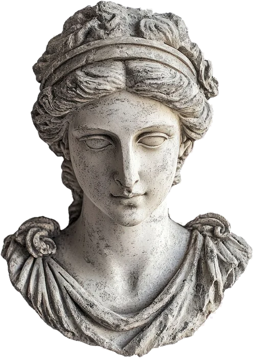
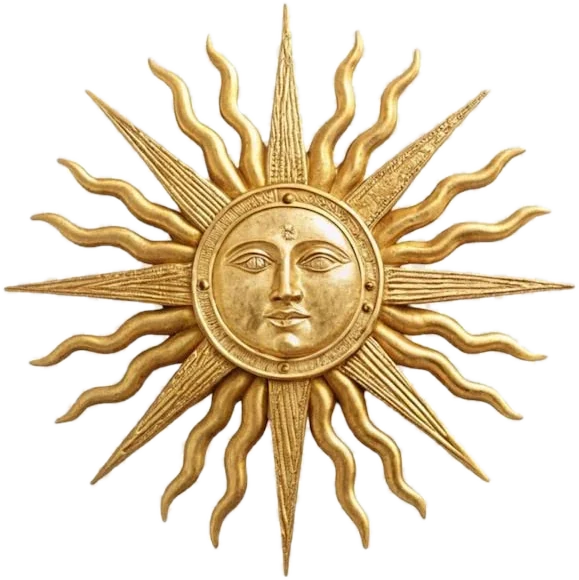
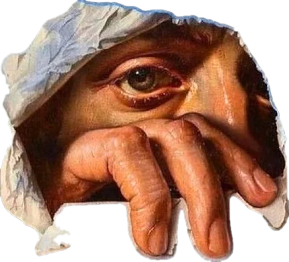
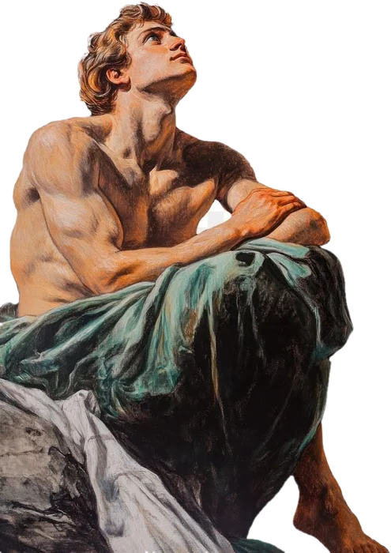
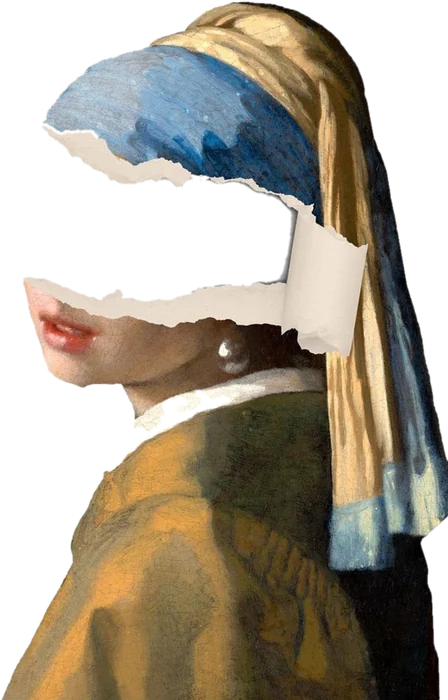
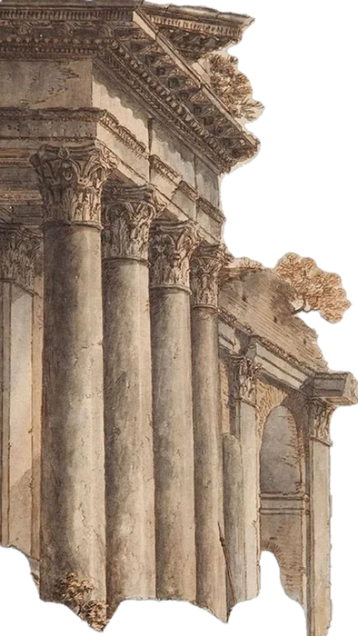
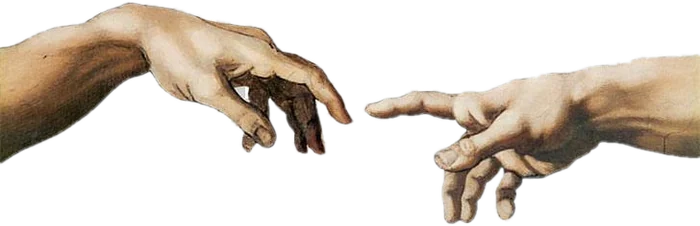
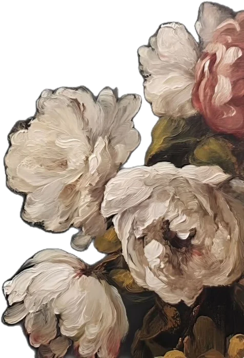
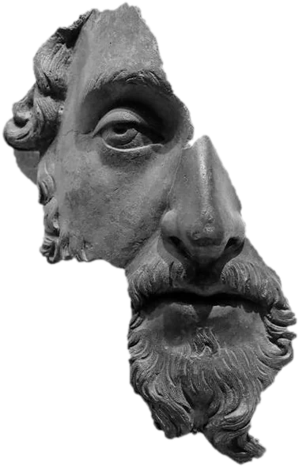
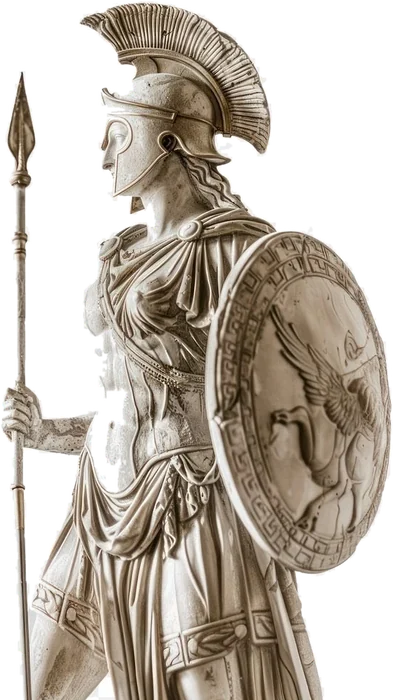

Мультимедийный лонгрид · Философия
Дегтянникова Валерия

01 · Вопрос
Ещё несколько лет назад вопрос «чем человек отличается от машины» был темой для фантастики. Сейчас любой студент может открыть чат с нейросетью и получить эссе за минуту.
Вместе с этим появились вполне бытовые проблемы. Если картину нарисовала нейросеть, кто её автор? Можно ли верить тому, что она написала? И кто отвечает, если она ошиблась?
Мне кажется, чтобы ответить, надо вспомнить, откуда вообще взялась идея, что человек что-то значит.
Эта идея называется гуманизмом, а тот, кто её разделяет, — гуманист. Поэтому вопрос проекта такой: может ли ИИ быть гуманистом? Моя позиция: нет, и дальше я объясню почему.


02 · Истоки
Корни у гуманизма древние. Ещё софист Протагор говорил, что человек есть мера всех вещей. Но по-настоящему идея расцвела в эпоху Возрождения, в Италии XIV–XVI веков. Люди тогда стали изучать античных авторов, рисовать с натуры и спрашивать, на что способен сам человек, а не только Бог.
Самый известный текст этого времени — «Речь о достоинстве человека» Пико делла Мирандолы, написанная в 1486 году. Пико рассказывает, что Бог создал человека последним и не дал ему определённого места и облика. Человек сам решает, кем стать.
Человек свободен лепить себя: подняться выше или опуститься ниже.
Это пересказ мысли Пико, не цитата. Но из неё видно, что нужно, чтобы быть гуманистом. Во-первых, считать человека высшей ценностью. Во-вторых, признавать его свободу выбора. В-третьих, помнить, что выбор — это ответственность.


03 · Машина
Современные нейросети учатся на огромных массивах текстов и картинок и предсказывают, что должно идти дальше. Из-за этого они выглядят умными: пишут связно, поддерживают разговор, решают задачи.
Философы спорят, насколько это похоже на мышление. Ник Бостром в книге «Искусственный интеллект» (2014) пишет, что если машины станут умнее людей, нам будет трудно ими управлять. Юваль Харари в «Homo Deus» (2015) идёт дальше: он считает, что мир может начать верить не человеку, а данным и алгоритмам.
Мартин Хайдеггер в «Вопросе о технике» (1954) предупреждал о другом. Техника для него не просто инструмент, а способ видеть мир, где всё превращается в ресурс. Если смотреть так, то и человек становится ресурсом.
Что важно
Нейросеть может говорить о ценности человека, но сама ничего не ценит. Она не выбирает, а считает, и целей у неё нет: их задаёт тот, кто пишет запрос.

04 · Примеры


05 · Вывод
Мой ответ: нет, ИИ не может быть гуманистом. Он может помогать людям: переводить, объяснять, искать ошибки. Такая помощь вполне гуманистическая по результату. Но гуманист отличается тем, что он ценит человека и сам выбирает, как поступить.
У ИИ нет ни одного из трёх признаков. Он ничего не ценит, он не выбирает свободно, и он ни за что не отвечает. Картина Белами и выдуманные дела показывают это: в обоих случаях ответственность оставалась на людях.
Так что вопрос стоит не «станет ли ИИ гуманистом», а «будем ли гуманистами мы, когда им пользуемся».
ИИ может помогать гуманистам, но гуманистом быть не может.
Источники